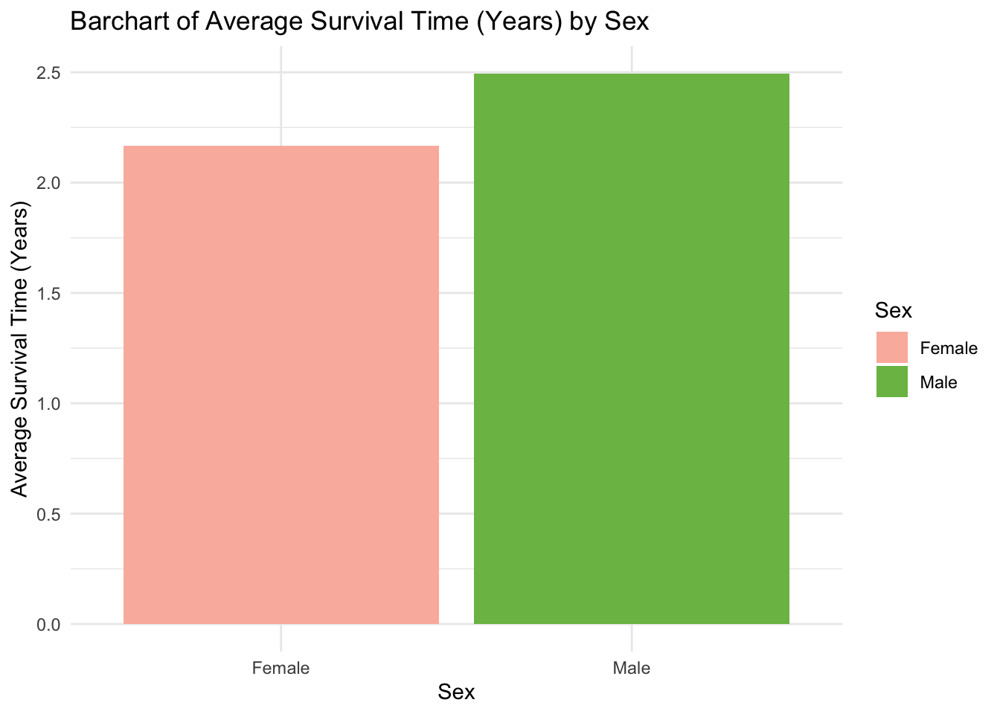
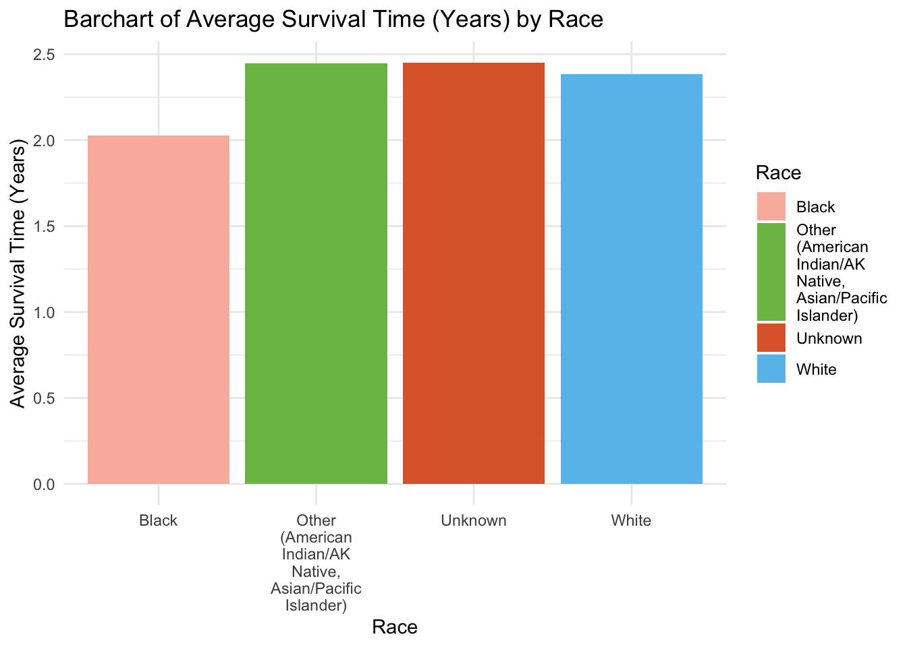
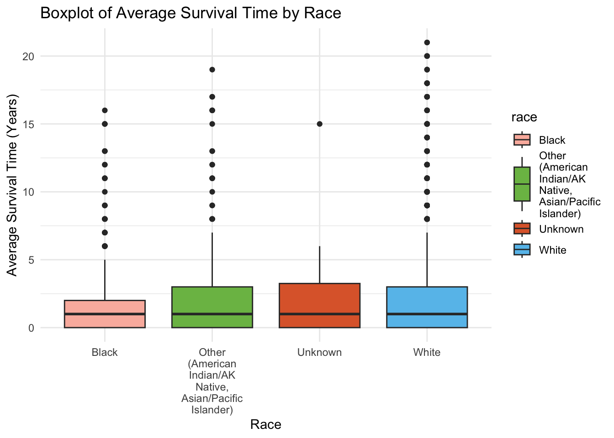
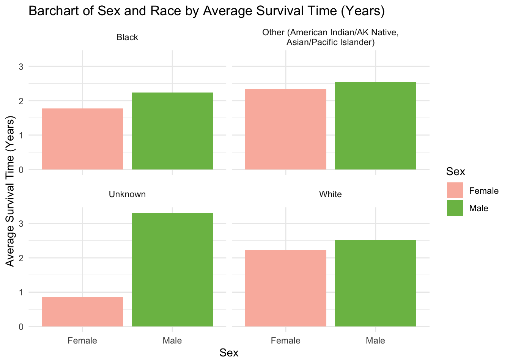
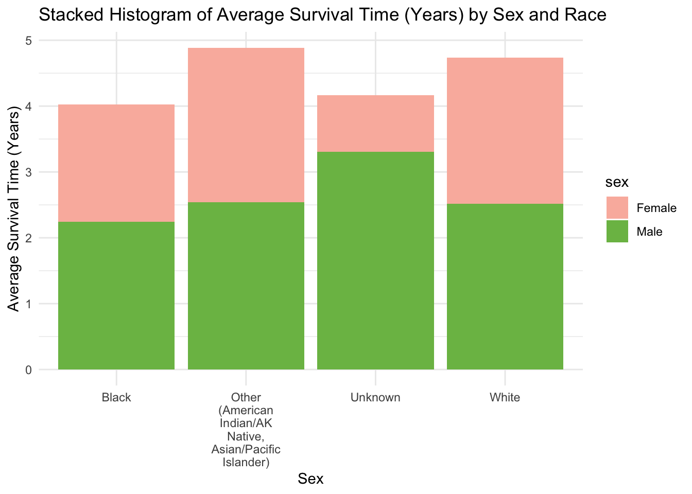
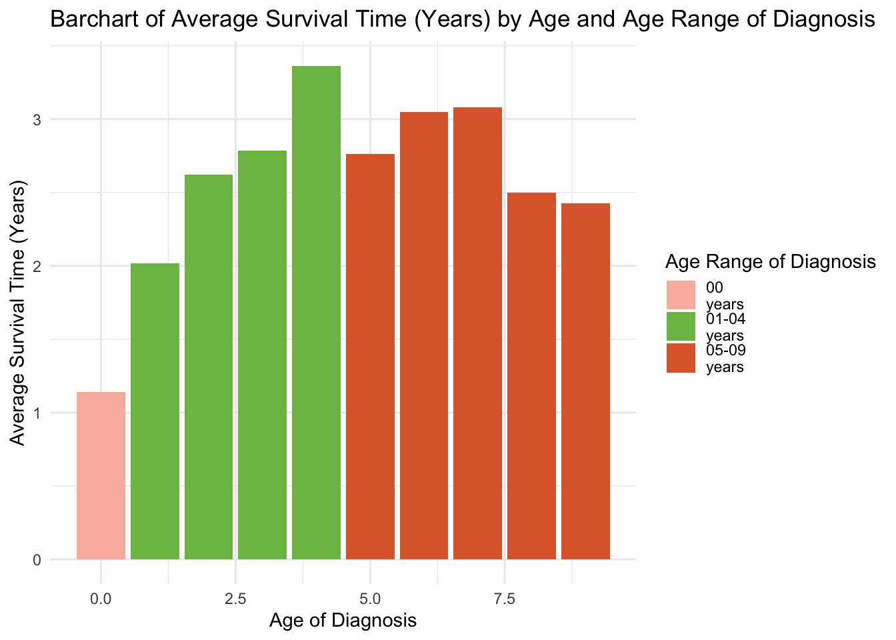
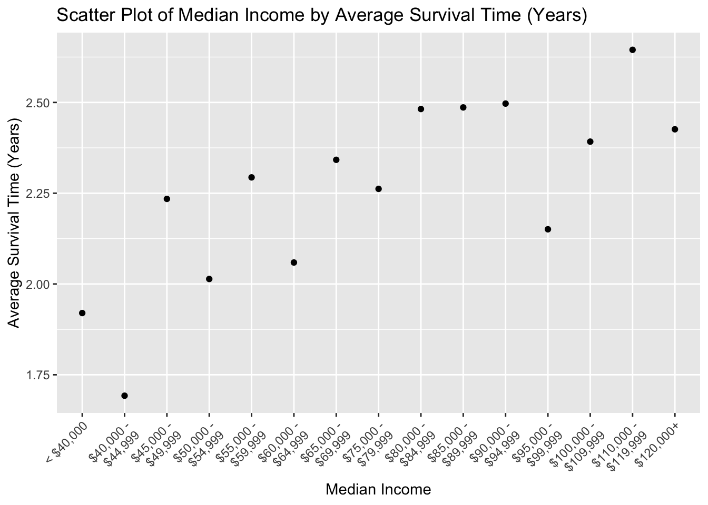
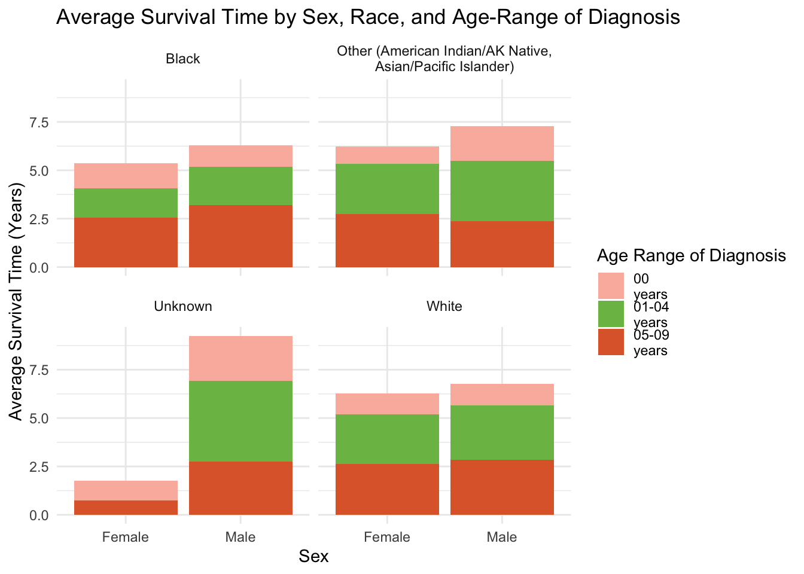
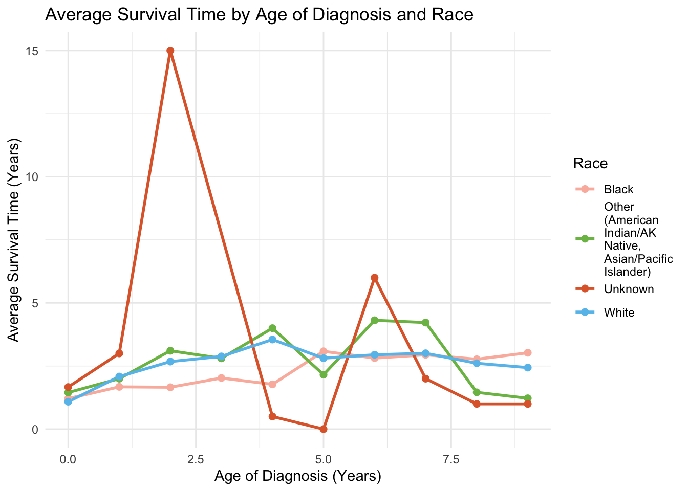

# Read in dataset
leuk <- read.csv("/Users/ericashin/Downloads/Pediatric Malignant Leukemia Cancer Cases in the US (2000-2021, Ages Under 10 Only).csv")PM 566 Final Project
This is my PM 566 Lab 12 website.
Read in Dataset
Load Libraries
# Load in libraries
library(dplyr)
library(ggplot2)
library(stringr)
library(knitr)
library(kableExtra) #extra styling for tables
library(paletteer) #color palette1. Introduction
Background:
Leukemia, a type of blood cancer characterized by the rapid growth of abnormal white blood cells in the bone marrow, is the most common type of cancer diagnosed in children - accounting for approximately 28% of all pediatric cancers in the United States. The incidence of leukemia in the pediatric population has raised public health concerns due to its impact on the long-term survival and quality of life of young patients.
The National Institutes of Health (NIH) collects cancer incidence data from population-based cancer registries covering approximately 47.9 percent of the US population in the Surveillance, Epidemiology, and End Results Program (SEER). The SEER registries collect data on patient demographics, primary tumor site, tumor morphology, stage at diagnosis, first course of treatment, and more. In this report, I focus specifically on leukemia cases within the SEER dataset to investigate trends and factors influencing survival among pediatric patients diagnosed with this condition.
Question of Interest:
This report aims to address the following research question: What demographic factors (e.g., sex, race, median income, age) are associated with the likelihood of longer survival times in deceased pediatric patients under age 10 diagnosed with malignant leukemia in the US?
While advancements in medical research and treatment methods have led to improved survival rates, disparities persist based on demographic factors such as sex, race, socioeconomic status, and age. Understanding these disparities is crucial for developing targeted interventions that can enhance treatment efficacy and support systems for vulnerable populations.
2. Methods
NIH provides a statistical software tool (available for download on their website) called SEER*Stat to access and analyze SEER data. Once I gained access to SEER*Stat, I looked through the list of registries and curated my dataset by selecting specific variables I wanted to examine in a case listing session.
My dataset comes from the specific NIH SEER registry called “Incidence - SEER Research Limited-Field Data, 22 Registries, Nov 2023 Sub (2000-2021) - Linked To County Attributes - Time Dependent (1990-2022) Income/Rurality, 1969-2022 Counties.” I chose to create my dataset based off this specific registry because it has the largest geographic coverage available - approximately 47.9% of the U.S. population (based on 2020 census).
To explore the question of interest, my dataset focuses on the following 13 variables:
Patient ID: Integer identifier for each patient.
Sex: Character variable indicating the patient’s sex (e.g., “Female”, “Male”).
Race (Recode: White, Black, Other): Character variable representing the patient’s race.
Race Ethnicity: Character variable detailing the specific ethnicity of the patient.
Age (Recode with Single Ages and 90+): Character variable indicating the patient’s age.
Age (Recode with <1 Year Olds): Character variable representing age ranges.
Year of Diagnosis: Integer indicating the year the patient was diagnosed.
Site (Recode ICD-O-3/WHO 2008): Character variable specifying the type of leukemia diagnosed.
Behavior Code (ICD-O-3): Character variable indicating the malignancy status.
Year of Death (Recode): Character variable denoting whether the patient is alive or the year of death.
Type of Reporting Source: Character variable describing the source of the cancer data (e.g., hospital or clinic).
Median Household Income (Inflation Adjusted to 2022): Character variable representing the income bracket of the patient’s household.
Rural-Urban Continuum Code: Character variable indicating the population type of the area where the patient resides.
Data Exploration Tools:
The following tools were used to explore the data.
dim(): Used to look at the dimensions of the initial dataset (26,916 observations by 13 variables).
str(): Provided information about the types of variables contained in the initial dataset (2 integer and 11 character variables).
colnames(): Provided information about the variable or column names.
head() and tail(): Utilized to look at the first and last six observations.
table(): Used to count occurrences of specific variables.
summary(): Provided statistical summaries like mean, median, min, max, and quartiles for specific variables.
Cleaning and Wrangling:
To clean the data, I first renamed the columns to make the variable names simpler and easier to use for coding purposes. Then, I checked for any missing observations in the key variables (sex, race, age, age range, and median income). Only the variable for median income (med_income) had missing observations, so I filtered them out of my dataset.
For my question of interest, I wanted to focus on the survival time for patients who had already passed away, so I filtered out observations that were categorized as “Alive at last contact” and only kept patients that have a year of death. After filtering, the dataset dimensions were 3457 observations by 14 variables.
Next, I noticed that the variables for year of death (year_death) and single ages (age) were character variables, so I converted them to numeric variables for easier calculations and visualizations. Finally, I created a new variable (surv) to calculate the survival time for each patient by subtracting the year of diagnosis from the year of death.
# Rename variable column names
leuk <- leuk |>
rename(id = Patient.ID,
sex = Sex,
race = Race.recode..White..Black..Other.,
eth = Race.ethnicity,
age = Age.recode.with.single.ages.and.90.,
age_range = Age.recode.with..1.year.olds,
year_dx = Year.of.diagnosis,
site = Site.recode.ICD.O.3.WHO.2008,
level = Behavior.code.ICD.O.3,
year_death = Year.of.death.recode,
med_income = Median.household.income.inflation.adj.to.2022,
rep_source = Type.of.Reporting.Source,
loc_type = Rural.Urban.Continuum.Code)
# Check for missing observations in key variables
#mean(is.na(leuk$sex))
#mean(is.na(leuk$race))
#mean(is.na(leuk$med_income))
#mean(is.na(leuk$age))
#mean(is.na(leuk$age_range))
leuk <- leuk |> filter(!is.na(med_income))
# Change age from character to numeric variable
leuk <- leuk |>
mutate(age = as.integer(sub(" years", "", age)))
# Convert year_death into numeric variable
leuk$year_death <- as.numeric(as.character(leuk$year_death))
# Filter out NA (cases that are still alive) and only keeping cases with year of death
leuk <- leuk |>
filter(!is.na(year_death) & !is.na(year_dx))
# Create new variable for survival time in years (called surv)
leuk <- leuk |>
mutate(surv = year_death - year_dx)3. Preliminary Results
a. Summary Statistics
Table 1. Summary Statistics of Survival Time by Sex
# Sex
sum_sex <- leuk |>
group_by(sex) |>
summarize(
Count = n(),
Mean = mean(surv, na.rm = TRUE),
Median = median(surv, na.rm = TRUE),
SD = sd(surv, na.rm = TRUE),
.groups = 'drop'
)
# Display summary statistics tables for sex
kable(sum_sex, caption = "Summary Statistics of Survival Times by Sex",
col.names = c("Sex", "Count of Patients", "Average Survival (Years)", "Median Survival (Years)", "Standard Deviation")) |>
kable_styling(full_width = F, position = "left")| Sex | Count of Patients | Average Survival (Years) | Median Survival (Years) | Standard Deviation |
|---|---|---|---|---|
| Female | 1564 | 2.167519 | 1 | 2.946973 |
| Male | 1893 | 2.494453 | 1 | 3.141080 |
Table 2. Summary Statistics of Survival Time by Race
# Race
sum_race <- leuk |>
group_by(race) |>
summarize(
Count = n(),
Mean = mean(surv, na.rm = TRUE),
Median = median(surv, na.rm = TRUE),
SD = sd(surv, na.rm = TRUE),
.groups = 'drop'
)
# Display summary statistics tables for race
kable(sum_race, caption = "Summary Statistics of Survival Times by Race",
col.names = c("Race", "Count of Patients", "Average Survival (Years)", "Median Survival (Years)", "Standard Deviation")) |>
kable_styling(full_width = F, position = "left")| Race | Count of Patients | Average Survival (Years) | Median Survival (Years) | Standard Deviation |
|---|---|---|---|---|
| Black | 427 | 2.025761 | 1 | 2.749612 |
| Other (American Indian/AK Native, Asian/Pacific Islander) | 307 | 2.446254 | 1 | 3.343056 |
| Unknown | 20 | 2.450000 | 1 | 3.531438 |
| White | 2703 | 2.385128 | 1 | 3.066261 |
Table 3. Summary Statistics of Survival Time by Race and Sex
# Race and Sex
sum_race_sex <- leuk |>
group_by(race, sex) |>
summarize(
Count = n(),
Mean = mean(surv, na.rm = TRUE),
Median = median(surv, na.rm = TRUE),
SD = sd(surv, na.rm = TRUE),
.groups = 'drop'
)
# Display summary statistics tables for race and sex
kable(sum_race_sex, caption = "Summary Statistics of Survival Times by Race and Sex",
col.names = c("Race", "Sex", "Count of Patients", "Average Survival (Years)", "Median Survival (Years)", "Standard Deviation")) |>
kable_styling(full_width = F, position = "left")| Race | Sex | Count of Patients | Average Survival (Years) | Median Survival (Years) | Standard Deviation |
|---|---|---|---|---|---|
| Black | Female | 200 | 1.7800000 | 1 | 2.614532 |
| Black | Male | 227 | 2.2422907 | 1 | 2.851544 |
| Other (American Indian/AK Native, Asian/Pacific Islander) | Female | 147 | 2.3401361 | 1 | 3.274008 |
| Other (American Indian/AK Native, Asian/Pacific Islander) | Male | 160 | 2.5437500 | 1 | 3.412605 |
| Unknown | Female | 7 | 0.8571429 | 0 | 1.463850 |
| Unknown | Male | 13 | 3.3076923 | 3 | 4.049375 |
| White | Female | 1210 | 2.2181818 | 1 | 2.959109 |
| White | Male | 1493 | 2.5204287 | 1 | 3.144917 |
Table 4. Summary Statistics of Survival Time by Age and Age Range of Diagnosis
# Age of Diagnosis and Age Range of Diagnosis
sum_age_range <- leuk |>
group_by(age, age_range) |>
summarize(
Count = n(),
Mean = mean(surv, na.rm = TRUE),
Median = median(surv, na.rm = TRUE),
SD = sd(surv, na.rm = TRUE),
.groups = 'drop'
)
# Display summary statistics tables for age and age range
kable(sum_age_range, caption = "Summary Statistics of Survival Times by Age and Age Range of Diagnosis",
col.names = c("Age of Diagnosis", "Age Range of Diagnosis", "Count of Patients", "Average Survival (Years)", "Median Survival (Years)", "Standard Deviation")) |>
kable_styling(full_width = F, position = "left")| Age of Diagnosis | Age Range of Diagnosis | Count of Patients | Average Survival (Years) | Median Survival (Years) | Standard Deviation |
|---|---|---|---|---|---|
| 0 | 00 years | 731 | 1.142271 | 1 | 1.723807 |
| 1 | 01-04 years | 479 | 2.016701 | 1 | 2.622667 |
| 2 | 01-04 years | 419 | 2.622912 | 2 | 3.249741 |
| 3 | 01-04 years | 381 | 2.787402 | 2 | 3.209271 |
| 4 | 01-04 years | 270 | 3.362963 | 2 | 3.984370 |
| 5 | 05-09 years | 238 | 2.760504 | 2 | 3.240923 |
| 6 | 05-09 years | 212 | 3.047170 | 2 | 3.538233 |
| 7 | 05-09 years | 242 | 3.078512 | 2 | 3.461410 |
| 8 | 05-09 years | 230 | 2.500000 | 1 | 2.866384 |
| 9 | 05-09 years | 255 | 2.427451 | 1 | 3.198430 |
Table 5. Summary Statistics of Survival Time by Median Income
# Median Income
# Define a specific order for the income ranges
income_levels <- c("< $40,000", "$40,000 - $44,999", "$45,000 - $49,999", "$50,000 - $54,999",
"$55,000 - $59,999", "$60,000 - $64,999", "$65,000 - $69,999", "$70,000 - $74,999", "$75,000 - $79,999", "$80,000 - $84,999", "$85,000 - $89,999", "$90,000 - $94,999", "$95,000 - $99,999", "$100,000 - $109,999", "$110,000 - $119,999", "$120,000+")
# Convert med_income to a factor with defined levels
leuk <- leuk |>
mutate(med_income = factor(med_income, levels = income_levels, ordered = TRUE))
# Summary statistics for survival times by median income, sorted by factor levels
sum_med_income <- leuk |>
group_by(med_income) |>
summarize(
Count = n(),
Mean = mean(surv, na.rm = TRUE),
Median = median(surv, na.rm = TRUE),
SD = sd(surv, na.rm = TRUE),
.groups = 'drop'
) |>
arrange(desc(med_income)) #sorting by the ordered factor
# Display summary statistics table for median income
kable(sum_med_income,
caption = "Summary Statistics of Survival Times by Median Income",
align = 'c',
col.names = c("Median Income Range", "Count of Patients", "Average Survival (Years)", "Median Survival (Years)", "Standard Deviation")) |>
kable_styling(full_width = FALSE, position = "left", font_size = 12)| Median Income Range | Count of Patients | Average Survival (Years) | Median Survival (Years) | Standard Deviation |
|---|---|---|---|---|
| $120,000+ | 115 | 2.426087 | 1 | 3.214716 |
| $110,000 - $119,999 | 138 | 2.644928 | 1 | 2.929340 |
| $100,000 - $109,999 | 227 | 2.392070 | 1 | 3.239760 |
| $95,000 - $99,999 | 146 | 2.150685 | 1 | 2.634892 |
| $90,000 - $94,999 | 159 | 2.496855 | 1 | 2.999735 |
| $85,000 - $89,999 | 146 | 2.486301 | 1 | 3.132117 |
| $80,000 - $84,999 | 332 | 2.481928 | 1 | 3.301969 |
| $75,000 - $79,999 | 271 | 2.261993 | 1 | 3.242312 |
| $65,000 - $69,999 | 345 | 2.342029 | 1 | 2.861960 |
| $60,000 - $64,999 | 338 | 2.059172 | 1 | 2.761980 |
| $55,000 - $59,999 | 235 | 2.293617 | 1 | 3.009061 |
| $50,000 - $54,999 | 145 | 2.013793 | 1 | 2.728416 |
| $45,000 - $49,999 | 128 | 2.234375 | 1 | 3.225109 |
| $40,000 - $44,999 | 104 | 1.692308 | 1 | 1.946253 |
| < $40,000 | 25 | 1.920000 | 1 | 2.413849 |
| NA | 603 | 2.601990 | 1 | 3.338708 |
b. Visualizations
Figure 1. Barchart of Average Survival Time (Years) by Sex
# Barchart of Average Survival Time (Years) by Sex
leuk |>
ggplot(mapping = aes(x = sex, y = surv, fill = sex)) +
geom_bar(stat = "summary", fun = "mean", position = "dodge") +
labs(title = "Barchart of Average Survival Time (Years) by Sex",
x = "Sex",
y = "Average Survival Time (Years)",
fill = "Sex") +
theme_minimal() + scale_fill_paletteer_d("lisa::BridgetRiley", labels = function(x) str_wrap(x, width = 5)) # using color palette with wrapped labels
Figure 2. Barchart of Average Survival Time (Years) by Race
# Barchart of Average Survival Time (Years) by Race
leuk |>
ggplot(mapping=aes(x = race, y = surv, fill = race)) +
geom_bar(stat = "summary", fun = "mean") +
labs(title = "Barchart of Average Survival Time (Years) by Race",
x = "Race",
y = "Average Survival Time (Years)",
fill = "Race") +
scale_x_discrete(labels = function(x) str_wrap(x, width = 5)) +
theme_minimal() +
scale_fill_paletteer_d("lisa::BridgetRiley", labels = function(x) str_wrap(x, width = 5)) # using color palette with wrapped labels
Figure 3. Boxplot of Average Survival Time (Years) by Race
# Boxplot of Average Survival Time by Race
ggplot(leuk, aes(x = race, y = surv, fill = race)) +
geom_boxplot() +
labs(title = "Boxplot of Average Survival Time by Race",
x = "Race",
y = "Average Survival Time (Years)") +
theme_minimal() +
scale_x_discrete(labels = function(x) str_wrap(x, width = 10)) +
scale_fill_paletteer_d("lisa::BridgetRiley", labels = function(x) str_wrap(x, width = 5)) # using color palette with wrapped labels
Figure 4. Barchart of Average Survival Time (Years) by Race and Sex
# Faceted barchart of average survival time by race and sex
sum_race_sex |>
filter(!is.na(race) & !is.na(sex)) |>
ggplot(mapping=aes(x=sex, y=Mean, fill=sex)) +
geom_bar(stat = "identity") +
facet_wrap(~ race, labeller = label_wrap_gen(width = 35)) +
labs(title = "Barchart of Sex and Race by Average Survival Time (Years)",
x = "Sex",
y = "Average Survival Time (Years)",
fill = "Sex") +
theme_minimal() +
scale_x_discrete(labels = function(x) str_wrap(x, width = 10)) +
scale_fill_paletteer_d("lisa::BridgetRiley", labels = function(x) str_wrap(x, width = 5)) # using color palette with wrapped labels
Figure 5. Stacked Barchart of Average Survival Time (Years) by Race and Sex
# Stacked histogram of Average Survival Time (Years) by Sex and Race
sum_race_sex |>
ggplot(mapping=aes(x = race, y = Mean, fill = sex)) +
geom_bar(stat = "identity") +
labs(title = "Stacked Histogram of Average Survival Time (Years) by Sex and Race",
x = "Sex",
y = "Average Survival Time (Years)") +
theme_minimal() +
scale_x_discrete(labels = function(x) str_wrap(x, width = 10)) +
scale_fill_paletteer_d("lisa::BridgetRiley", labels = function(x) str_wrap(x, width = 5)) # using color palette with wrapped labels
Figure 6. Stacked Barchart of Average Survival Time (Years) by Age and Age Range of Diagnosis
# Barchart of Average Survival Time (Years) by Age and Age Range of Diagnosis
sum_age_range |>
ggplot(mapping=aes(x = age, y = Mean, fill = age_range)) +
geom_bar(stat = "identity") +
labs(title = "Barchart of Average Survival Time (Years) by Age and Age Range of Diagnosis",
x = "Age of Diagnosis",
y = "Average Survival Time (Years)",
fill = "Age Range of Diagnosis") +
theme_minimal() +
scale_fill_paletteer_d("lisa::BridgetRiley", labels = function(x) str_wrap(x, width = 5)) # using color palette with wrapped labels
Figure 7. Scatterplot of Average Survival Time (Years) by Median Income
# Scatter plot of average survival time by median income
sum_med_income |>
filter(!is.na(med_income)) |>
ggplot(mapping=aes(x=med_income, y=Mean)) +
geom_point() +
labs(title = "Scatter Plot of Median Income by Average Survival Time (Years)",
x = "Median Income",
y = "Average Survival Time (Years)") +
theme(axis.text.x = element_text(angle = 45, hjust = 1)) +
scale_x_discrete(labels = function(x) str_wrap(x, width = 10)) #wrapping x-axis labels
Figure 8. Barchart of Average Survival Time (Years) by Sex, Race, and Age-range of Diagnosis
# Barplot of average survival time by sex, race, and age-range of diagnosis
leuk |>
ggplot(mapping=aes(x = sex, y = surv, fill = age_range)) +
geom_bar(stat = "summary", fun = "mean") +
facet_wrap(~ race, labeller = label_wrap_gen(width = 35)) +
labs(title = "Average Survival Time by Sex, Race, and Age-Range of Diagnosis",
x = "Sex",
y = "Average Survival Time (Years)",
fill = "Age Range of Diagnosis") +
theme_minimal() +
scale_fill_paletteer_d("lisa::BridgetRiley", labels = function(x) str_wrap(x, width = 5)) # using color palette with wrapped labels
Figure 9. Lineplot Average Survival Time (Years) by Age of Diagnosis and Race
# Line plot of average survival time by age of diagnosis and race
avg_surv_age_race <- leuk |>
group_by(age, race) |>
summarize(avg_surv = mean(surv, na.rm = TRUE), .groups = 'drop')
ggplot(avg_surv_age_race, aes(x = age, y = avg_surv, color = race, group = race)) +
geom_line(linewidth = 1) +
geom_point(size = 2) +
labs(title = "Average Survival Time by Age of Diagnosis and Race",
x = "Age of Diagnosis (Years)",
y = "Average Survival Time (Years)",
color = "Race") +
theme_minimal() +
scale_color_paletteer_d("lisa::BridgetRiley", labels = function(x) str_wrap(x, width = 5)) # using color palette with wrapped labels
4. Conclusion
In analyzing the data, it was found that males had a higher average survival time (2.494 years) compared to females (2.168 years). Among racial categories, “Unknown” had the highest average survival time at 2.450 years, closely followed by “Other (American Indian/AK Native, Asian/Pacific Islander)” at 2.446 years. However, it is important to note that the majority of patients were classified as “White” (2703 out of 3457 patients or 78%) while the “Unknown” category contained only 20 patients (5.8%), compared to 307 for “Other” (8.9%) and 427 for “Black” (12.4%). This discrepancy suggests that average survival times for the smaller categories may be more susceptible to outliers, especially in the “Unknown” group, which exhibited an unusually high average survival time of around 15 years for patients approximately 2.5 years old.
Additionally, there appears to be a positive association between median income and average survival time, indicating that higher income is correlated with better survival outcomes. Age also played a significant role; the majority of observations were in the 1-4 and 5-9 year ranges. Newborns (0 years) showed significantly lower average survival times, likely due to their increased vulnerability to disease as well the age range spanning less years than the other categories.
Overall, preliminary analysis suggests that demographic factors such as being male, coming from a higher-income household, and being older are associated with longer survival times in deceased pediatric patients under age 10 diagnosed with malignant leukemia in the US.